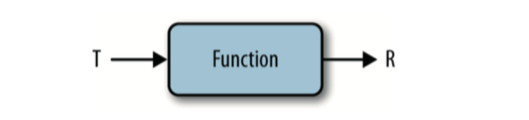

JDK 8 函数式编程入门
JDK 8 函数式编程入门
目录
- 概述
- Lambda 表达式
- 集合处理
1. 概述
1.1 函数式编程简介
我们最常用的面向对象编程（Java）属于命令式编程（Imperative Programming）这种编程范式。常见的编程范式还有逻辑式编程（Logic Programming），函数式编程（Functional Programming）。
函数式编程作为一种编程范式，在科学领域，是一种编写计算机程序数据结构和元素的方式，它把计算过程当做是数学函数的求值，而避免更改状态和可变数据。
函数式编程并非近几年的新技术或新思维，距离它诞生已有大概50多年的时间了。它一直不是主流的编程思维，但在众多的所谓顶级编程高手的科学工作者间，函数式编程是十分盛行的。
什么是函数式编程？简单的回答：一切都是数学函数。函数式编程语言里也可以有对象，但通常这些对象都是恒定不变的 —— 要么是函数参数，要什么是函数返回值。函数式编程语言里没有 for/next 循环，因为这些逻辑意味着有状态的改变。相替代的是，这种循环逻辑在函数式编程语言里是通过递归、把函数当成参数传递的方式实现的。
举个例子：
a = a + 1
这段代码在普通成员看来并没有什么问题，但在数学家看来确实不成立的，因为它意味着变量值得改变。
1.2 Lambda 表达式简介
Java 8的最大变化是引入了Lambda（Lambda 是希腊字母 λ 的英文名称）表达式——一种紧凑的、传递行为的方式。
先看个例子：
button.addActionListener(new ActionListener() {
public void actionPerformed(ActionEvent event) {
System.out.println("button clicked");
}
});
这段代码使用了匿名类。ActionListener 是一个接口，这里 new 了一个类实现了 ActionListener 接口，然后重写了 actionPerformed 方法。actionPerformed 方法接收 ActionEvent 类型参数，返回空。
这段代码我们其实只关心中间打印的语句，其他都是多余的。所以使用 Lambda 表达式，我们就可以简写为：
button.addActionListener(event -> System.out.println("button clicked"));
2. Lambda 表达式
2.1 Lambda 表达式的形式
Java 中 Lambda 表达式一共有五种基本形式，具体如下：
➊
Runnable noArguments = () -> System.out.println("Hello World");
➋
ActionListener oneArgument = event -> System.out.println("button clicked");
➌
Runnable multiStatement = () -> {
System.out.print("Hello");
System.out.println(" World");
};
➍
BinaryOperator<Long> add = (x, y) -> x + y;
➎
BinaryOperator<Long> addExplicit = (Long x, Long y) -> x + y;
➊中所示的 Lambda 表达式不包含参数,使用空括号 () 表示没有参数。该 Lambda 表达式 实现了 Runnable 接口,该接口也只有一个 run 方法,没有参数,且返回类型为 void。➋中所示的 Lambda 表达式包含且只包含一个参数,可省略参数的括号,这和例 2-2 中的 形式一样。Lambda 表达式的主体不仅可以是一个表达式,而且也可以是一段代码块,使用大括号 ({})将代码块括起来,如➌所示。该代码块和普通方法遵循的规则别无二致,可以用返 回或抛出异常来退出。只有一行代码的 Lambda 表达式也可使用大括号,用以明确 Lambda表达式从何处开始、到哪里结束。Lambda 表达式也可以表示包含多个参数的方法,如➍所示。这时就有必要思考怎样去阅 读该 Lambda 表达式。这行代码并不是将两个数字相加,而是创建了一个函数,用来计算 两个数字相加的结果。变量 add 的类型是 BinaryOperator
记住一点很重要，Lambda 表达式都可以扩写为原始的“匿名类”形式。所以当你觉得这个 Lambda 表达式很复杂不容易理解的时候，不妨把它扩写为“匿名类”形式来看。
2.2 闭包
如果你以前使用过匿名内部类，也许遇到过这样的问题。当你需要匿名内部类所在方法里的变量，必须把该变量声明为 final。如下例子所示：
final String name = getUserName();
button.addActionListener(new ActionListener() {
public void actionPerformed(ActionEvent event) {
System.out.println("hi " + name);
}
});
Java 8放松了这一限制，可以不必再把变量声明为 final，但其实该变量实际上仍然是 final 的。虽然无需将变量声明为 final，但在 Lambda 表达式中，也无法用作非终态变量。如果坚持用作非终态变量（即改变变量的值），编译器就会报错。
2.3 函数接口
上面例子里提到了 ActionListener 接口，我们看一下它的代码：
public interface ActionListener extends EventListener {
/**
* Invoked when an action occurs.
*/
public void actionPerformed(ActionEvent e);
}
ActionListener 只有一个抽象方法：actionPerformed，被用来表示行为:接受一个参数，返回空。记住，由于 actionPerformed 定义在一个接口里，因此 abstract 关键字不是必需的。该接口也继承自一个不具有任何方法的父接口：EventListener。
我们把这种接口就叫做函数接口。
JDK 8 中提供了一组常用的核心函数接口：
| 接口 | 参数 | 返回类型 | 描述 |
|---|---|---|---|
| Predicate | T | boolean | 用于判别一个对象。比如求一个人是否为男性 |
| Consumer< T > | T | void | 用于接收一个对象进行处理但没有返回，比如接收一个人并打印他的名字 |
| Function<T, R> | T | R | 转换一个对象为不同类型的对象 |
| Supplier | None | T | 提供一个对象 |
| UnaryOperator | T | T | 接收对象并返回同类型的对象 |
| BinaryOperator | (T, T) | T | 接收两个同类型的对象，并返回一个原类型对象 |
其中 Cosumer 与 Supplier 对应，一个是消费者，一个是提供者。
Predicate 用于判断对象是否符合某个条件，经常被用来过滤对象。
Function 是将一个对象转换为另一个对象，比如说要装箱或者拆箱某个对象。
UnaryOperator 接收和返回同类型对象，一般用于对对象修改属性。BinaryOperator 则可以理解为合并对象。
如果以前接触过一些其他 Java 框架，比如 Google Guava，可能已经使用过这些接口，对这些东西并不陌生。所以，其实 Java 8 的改进并不是闭门造车，而是集百家之长。
3. 集合处理
3.1 Stream 简介
在程序编写过程中，集合的处理应该是很普遍的。Java 8 对于 Collection 的处理花了很大的功夫，如果从 JDK 7 过渡到 JDK 8，这一块也可能是我们感受最为明显的。
Java 8 中，引入了流（Stream）的概念，这个流和以前我们使用的 IO 中的流并不太相同。
所有继承自 Collection 的接口都可以转换为 Stream。还是看一个例子。
假设我们有一个 List 包含一系列的 Person，Person 有姓名 name 和年龄 age 连个字段。现要求这个列表中年龄大于 20 的人数。
通常按照以前我们可能会这么写：
long count = 0;
for (Person p : persons) {
if (p.getAge() > 20) {
count ++;
}
}
但如果使用 stream 的话，则会简单很多:
long count = persons.stream()
.filter(person -> person.getAge() > 20)
.count();
这只是 stream 的很简单的一个用法。现在链式调用方法算是一个主流，这样写也更利于阅读和理解编写者的意图，一步方法做一件事。
3.2 Stream 常用操作
Stream 的方法分为两类。一类叫惰性求值，一类叫及早求值。
判断一个操作是惰性求值还是及早求值很简单：只需看它的返回值。如果返回值是 Stream，那么是惰性求值。其实可以这么理解，如果调用惰性求值方法，Stream 只是记录下了这个惰性求值方法的过程，并没有去计算，等到调用及早求值方法后，就连同前面的一系列惰性求值方法顺序进行计算，返回结果。
通用形式为：
Stream.惰性求值.惰性求值. ... .惰性求值.及早求值
整个过程和建造者模式有共通之处。建造者模式使用一系列操作设置属性和配置，最后调 用一个 build 方法，这时，对象才被真正创建。
3.2.1 collect(toList())
collect(toList()) 方法由 Stream 里的值生成一个列表，是一个及早求值操作。可以理解为 Stream 向 Collection 的转换。
注意这边的
toList()其实是Collectors.toList()，因为采用了静态倒入，看起来显得简洁。
List<String> collected = Stream.of("a", "b", "c")
.collect(Collectors.toList());
assertEquals(Arrays.asList("a", "b", "c"), collected);
3.2.2 map
如果有一个函数可以将一种类型的值转换成另外一种类型，map 操作就可以使用该函数，将一个流中的值转换成一个新的流。
List<String> collected = Stream.of("a", "b", "hello")
.map(string -> string.toUpperCase())
.collect(toList());
assertEquals(asList("A", "B", "HELLO"), collected);
map 方法就是接受的一个 Function 的匿名函数类，进行的转换。

3.2.3 filter
遍历数据并检查其中的元素时，可尝试使用 Stream 中提供的新方法 filter。
List<String> beginningWithNumbers =
Stream.of("a", "1abc", "abc1")
.filter(value -> isDigit(value.charAt(0)))
.collect(toList());
assertEquals(asList("1abc"), beginningWithNumbers);
filter 方法就是接受的一个 Predicate 的匿名函数类，判断对象是否符合条件，符合条件的才保留下来。
3.2.4 flatMap
flatMap 方法可用 Stream 替换值，然后将多个 Stream 连接成一个 Stream。
List<Integer> together = Stream.of(asList(1, 2), asList(3, 4))
.flatMap(numbers -> numbers.stream())
.collect(toList());
assertEquals(asList(1, 2, 3, 4), together);
flatMap 最常用的操作就是合并多个 Collection。
3.2.5 max和min
Stream 上常用的操作之一是求最大值和最小值。Stream API 中的 max 和 min 操作足以解决这一问题。
List<Integer> list = Lists.newArrayList(3, 5, 2, 9, 1);
int maxInt = list.stream()
.max(Integer::compareTo)
.get();
int minInt = list.stream()
.min(Integer::compareTo)
.get();
assertEquals(maxInt, 9);
assertEquals(minInt, 1);
这里有 2 个要点需要注意：
max和min方法返回的是一个Optional对象（对了，和 Google Guava 里的 Optional 对象是一样的）。Optional对象封装的就是实际的值，可能为空，所以保险起见，可以先用isPresent()方法判断一下。Optional的引入就是为了解决方法返回null的问题。Integer::compareTo也是属于 Java 8 引入的新特性，叫做 方法引用（Method References）。在这边，其实就是(int1, int2) -> int1.compareTo(int2)的简写，可以自己查阅了解，这里不再多做赘述。
3.2.6 reduce
reduce 操作可以实现从一组值中生成一个值。在上述例子中用到的 count、min 和 max 方法,因为常用而被纳入标准库中。事实上，这些方法都是 reduce 操作。
上图展示了 reduce 进行累加的一个过程。具体的代码如下：
int result = Stream.of(1, 2, 3, 4)
.reduce(0, (acc, element) -> acc + element);
assertEquals(10, result);
注意 reduce 的第一个参数，这是一个初始值。0 + 1 + 2 + 3 + 4 = 10。
如果是累乘，则为：
int result = Stream.of(1, 2, 3, 4)
.reduce(1, (acc, element) -> acc * element);
assertEquals(24, result);
因为任何数乘以 1 都为其自身嘛。1 * 1 * 2 * 3 * 4 = 24。
Stream 的方法还有很多，这里列出的几种都是比较常用的。Stream 还有很多通用方法，具体可以查阅 Java 8 的 API 文档。
https://docs.oracle.com/javase/8/docs/api/
3.3 数据并行化操作
Stream 的并行化也是 Java 8 的一大亮点。数据并行化是指将数据分成块，为每块数据分配单独的处理单元。这样可以充分利用多核 CPU 的优势。
并行化操作流只需改变一个方法调用。如果已经有一个 Stream 对象，调用它的 parallel() 方法就能让其拥有并行操作的能力。如果想从一个集合类创建一个流，调用 parallelStream() 就能立即获得一个拥有并行能力的流。
int sumSize = Stream.of("Apple", "Banana", "Orange", "Pear")
.parallel()
.map(s -> s.length())
.reduce(Integer::sum)
.get();
assertEquals(sumSize, 21);
这里求的是一个字符串列表中各个字符串长度总和。
如果你去计算这段代码所花的时间，很可能比不加上 parallel() 方法花的时间更长。这是因为数据并行化会先对数据进行分块，然后对每块数据开辟线程进行运算，这些地方会花费额外的时间。并行化操作只有在 数据规模比较大 或者 数据的处理时间比较长 的时候才能体现出有事，所以并不是每个地方都需要让数据并行化，应该具体问题具体分析。
3.4 其他
3.4.1 收集器
Stream 转换为 List 是很常用的操作，其他 Collectors 还有很多方法，可以将 Stream 转换为 Set, 或者将数据分组并转换为 Map，并对数据进行处理。也可以指定转换为具体类型，如 ArrayList, LinkedList 或者 HashMap。甚至可以自定义 Collectors，编写自己的收集器。
Collectors （收集器）的内容太多，有兴趣的可以自己研究。
http://my.oschina.net/joshuashaw/blog/487322 https://docs.oracle.com/javase/8/docs/api/java/util/stream/Collectors.html
3.4.2 元素顺序
另外一个尚未提及的关于集合类的内容是流中的元素以何种顺序排列。一些集合类型中的元素是按顺序排列的，比如 List；而另一些则是无序的，比如 HashSet。增加了流操作后，顺序问题变得更加复杂。
总之记住。如果集合本身就是无序的，由此生成的流也是无序的。一些中间操作会产生顺序，比如对值做映射时，映射后的值是有序的，这种顺序就会保留 下来。如果进来的流是无序的，出去的流也是无序的。
如果我们需要对流中的数据进行排序，可以调用 sorted 方法：
List<Integer> list = Lists.newArrayList(3, 5, 1, 10, 8);
List<Integer> sortedList = list.stream()
.sorted(Integer::compareTo)
.collect(Collectors.toList());
assertEquals(sortedList, Lists.newArrayList(1, 3, 5, 8, 10));
3.4.3 @FunctionalInterface
我们讨论过函数接口定义的标准，但未提及 @FunctionalInterface 注释。事实上，每个用作函数接口的接口都应该添加这个注释。
但 Java 中有一些接口，虽然只含一个方法，但并不是为了使用 Lambda 表达式来实现的。比如，有些对象内部可能保存着某种状态，使用带有一个方法的接口可能纯属巧合。
该注释会强制 javac 检查一个接口是否符合函数接口的标准。如果该注释添加给一个枚举类型、类或另一个注释，或者接口包含不止一个抽象方法，javac 就会报错。重构代码时，使用它能很容易发现问题。